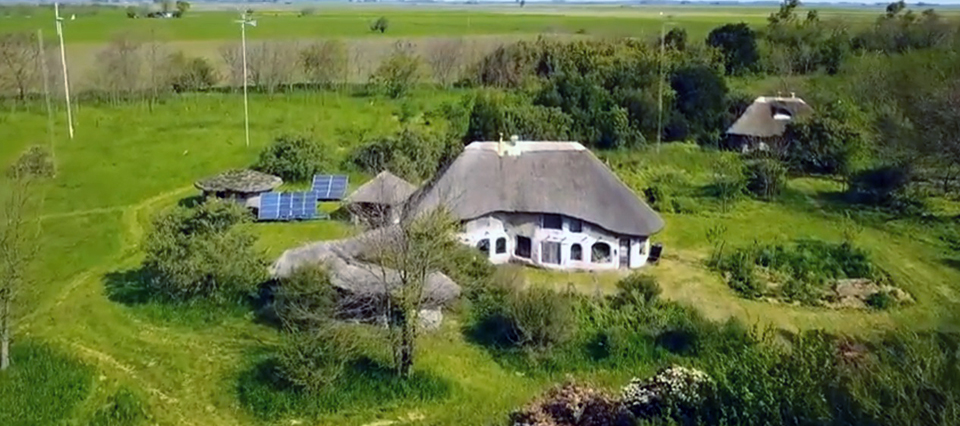

Presentación
Ecoaldea Lamat es un proyecto de comunidad agroforestal sustentable fundada sobre los principios éticos y de diseño de la permacultura. Su objetivo es integrar el cultivo orgánico, la bioconstrucción, las energías renovables y la educación ambiental en un modelo de vida saludable, resiliente y de bajo impacto ecológico.

📸 Ecoaldea Gaia - Buenos Aires, Argentina
El proyecto busca generar una experiencia local donde sea posible alcanzar una alta calidad de vida mediante la armonía entre producción, hábitat y comunidad, combinando saberes ancestrales con tecnologías apropiadas.
Inspirada en las experiencias de más de 10.000 ecoaldeas activas en el mundo —documentadas por la Global Ecovillage Network (GEN)—, Lamat propone ser un laboratorio vivo de sostenibilidad y educación ambiental, abierto a la participación de vecinos, estudiantes, investigadores y organizaciones.
Según la ONU Medio Ambiente (2022), el 75 % de los suelos del planeta se encuentran degradados, y la agricultura convencional representa más del 30 % de las emisiones globales de CO₂. Frente a esta crisis, la permacultura ofrece un marco de diseño regenerativo capaz de revertir procesos de erosión ecológica y social, fortaleciendo los sistemas locales de alimento, energía y cooperación. Nuestro propósito es crear un espacio donde la vida cotidiana, el trabajo y el aprendizaje se integren en una misma práctica: habitar regenerando.
“Una comunidad saludable es aquella donde las diferencias no se eliminan, sino que se ponen al servicio de algo mayor.”
— David Holmgren
Crisis Medioambiental
La humanidad atraviesa una de las etapas más críticas de su historia ecológica. Según el Panel Intergubernamental sobre Cambio Climático (IPCC, 2023), las actividades humanas han elevado la temperatura promedio del planeta en 1,2 °C respecto a los niveles preindustriales, generando alteraciones severas en los ecosistemas, pérdida de biodiversidad y eventos climáticos extremos cada vez más frecuentes.
La FAO (2022) estima que más del 33 % de los suelos agrícolas del mundo ya se encuentran degradados, principalmente por el uso intensivo de agroquímicos, la deforestación y la erosión hídrica. En paralelo, el Programa de las Naciones Unidas para el Medio Ambiente (PNUMA) señala que la contaminación del aire y del agua provoca alrededor de 9 millones de muertes prematuras cada año.
Esta crisis no es sólo ambiental, sino también cultural y civilizatoria. Surge de un modelo de desarrollo basado en el consumo ilimitado de recursos finitos, donde la productividad económica se separó de los ritmos y límites de nuestra biosfera. Como expresa el ecólogo Fritjof Capra (1996):
La sostenibilidad no puede lograrse mediante la tecnología sola, sino a través de un cambio profundo en los valores y las estructuras de nuestra sociedad.

📸 Edward Burtynsky - 1995
Frente a este panorama, la permacultura —Mollison y Holmgren (1978)— ofrece un paradigma alternativo: un sistema de diseño que busca crear entornos humanos sostenibles, integrando la producción de alimentos, la gestión del agua, la energía, la vivienda y la comunidad bajo principios ecológicos. Se trata, en palabras de Holmgren, de “diseñar conscientemente paisajes que imiten los patrones y relaciones de la naturaleza, produciendo abundancia para las necesidades humanas y las de otras especies”.
Este enfoque es una respuesta práctica a la crisis global. A través de un modelo agroforestal y educativo, el proyecto de Lamat busca regenerar suelos, reducir la huella ecológica y fortalecer la cooperación comunitaria en la región de Viedma, Río Negro.
Se trata de reaprender a habitar la Tierra: establecer el equilibrio entre tecnología, consciencia y naturaleza para que la vida pueda continuar flourishes.
Agroecología & Forestación
Inspirada en la observación de los ecosistemas naturales, la agroecología integra conocimientos tradicionales, prácticas campesinas y avances científicos modernos. Su objetivo no es sólo producir alimentos, sino regenerar la base ecológica de la vida: el suelo, el agua, la biodiversidad y las relaciones comunitarias.
La agroecología representa hoy una de las estrategias más efectivas para enfrentar simultáneamente la crisis ambiental, alimentaria y social. Este enfoque permite aumentar la resiliencia de los sistemas agrícolas, mejorar la fertilidad del suelo y reducir en más del 40 % el uso de insumos externos, sin disminuir la productividad (FAO, 2021).
La reforestación planificada y la creación de sistemas agroforestales son pilares del diseño permacultural. Este tipo de sistemas combinan especies leñosas (árboles y arbustos) con cultivos agrícolas y espacios de pastoreo, generando múltiples beneficios ecológicos:
La sostenibilidad no puede lograrse mediante la tecnología sola, sino a través de un cambio profundo en los valores y las estructuras de nuestra sociedad.

📸 Las Cañadas - 2007